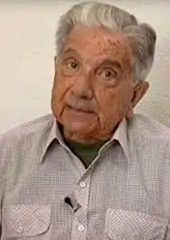
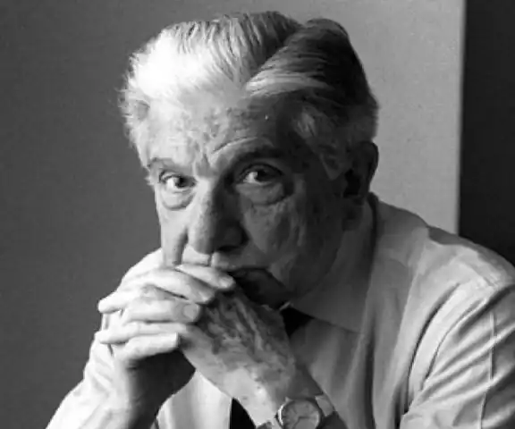

Аугусто Роа Бастос (13 червня 1917, Асунсьйон, Парагвай — 26 квітня 2005, Асунсьйон) — парагвайський поет і прозаїк.
Батько — індіанець гуарані, мати — родом з Португалії. У 1932 році втік з товаришами зі школи, пішов добровольцем на чакську війну, служив на фронті санітаром. У 1945 жив і працював журналістом у Великій Британії, Франції, Німеччині. У 1947 разом з парагвайським поетом Ерібом Кампосом Сервера в умовах розпочатої громадянської війни та політичних репресій переїжджає у Буенос-Айрес. У 1976—1989 — живе у Франції, після падіння диктатури Стресснера повернувся на батьківщину.
У 1982 був позбавлений парагвайського громадянства, з 1983 — громадянин Іспанії. Помер в 2005 у віці 87 років. Похований у родинному пантеоні на кладовищі Реколета в Асунсьйоні. Літературна діяльність почалася в 40-х роках (поетичні збірки, роман "Фульхенсіо Міранда", 1942, та ін.). Популярність Роа Бастосу принесла збірка оповідань "Грім у листі" (1953) і роман "Син людський" (1959). У соціально-викривальному романі "Син людський", використовуючи елементи народної міфології й символіки, письменник відтворює трагічні картини життя парагвайського народу. Народному життю присвячені й оповідання збірки "Пішки по воді" (1966), "Спалені дерева" (1969), "Морієнсіа" (1969), "Мертвий" та інші твори" (1972). У 1974 році виходить монументальний роман "Я, Верховний", що викликав широкі відгуки. Використовуючи історичні документи, письменник створює в цьому романі образ засновника Парагваю, диктатора Франсіа, викриває історичні корені деспотичної влади. Після відновлення в Аргентині в 1976 режиму військової диктатури книга була заборонена, а сам письменник емігрував до Франції.